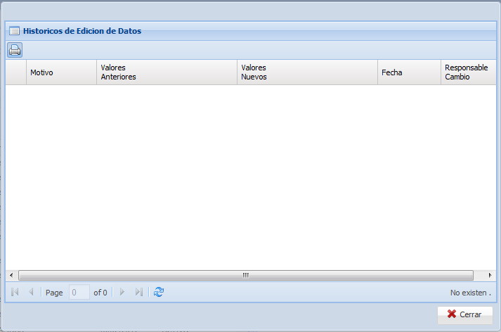

Posee las siguientes secciones:
1: Opciones del Adm. Usuario por App como ser: Agregar Area Usr y Quitar Area Usr.
2: Sección de busqueda, donde se introducen los criterios para realizar busqueda en el contenido del grid.
Para que limpie el filtro y que muestre todos los datos se debe solo borrar el valor introducido y hacer click en el boton BUSCAR:
Mostrando todos los datos existentes.
La opcion de impresion  :
:
Para visualizar los historicos mediante  se debe seleccionar un registro de usuario inicialmente caso contrario:
se debe seleccionar un registro de usuario inicialmente caso contrario:

Una vez seleccionado el usuario se visualizara:

3: Sección del grid, donde se muestran todos los usuarios existentes en la Base de Datos.
4: Paginacion del grid.
5: Formulario de usuario con las aplicaciones, donde se visualizan mas detalles de la relacion
6: Grid relacion usuario con las areas, se visualiza de acuerdo al usuario seleccionado las areas a las cuales pertenece.
Created with the Personal Edition of HelpNDoc: Free CHM Help documentation generator